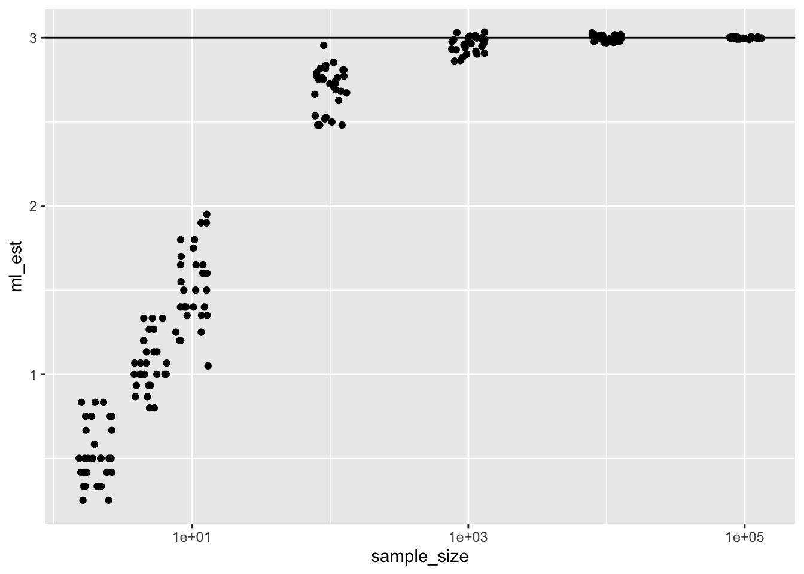
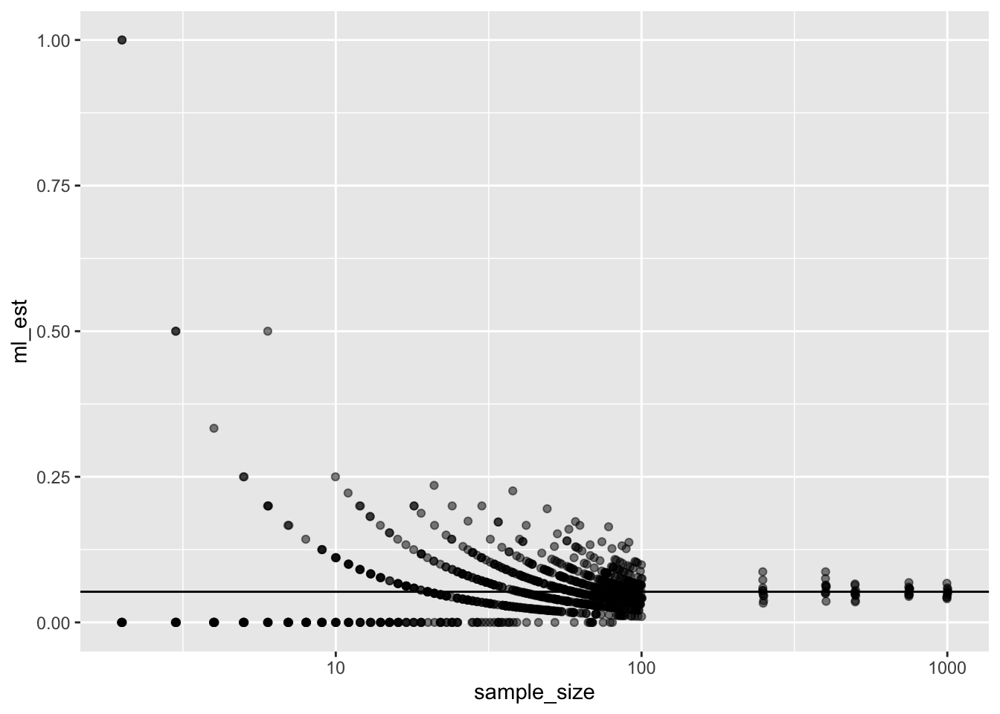

1.7 Consistency
Imagine taking a sample of size \(N\) and computing the estimate \(\hat{\theta}_N\) of the parameter \(\theta\). We say that \(\hat{\theta}\) is a consistent estimator of \(\theta\) if \(\hat{\theta}\) converges in probability to \(\theta\).
Intuitively, this means the following:
- For a large enough sample, the estimator returns the exact right answer.
- For a large enough sample, the estimate \(\hat{\theta}\) does not vary any more, but collapses onto a single point and that point is \(\theta\).
Under weak, but somewhat technical, assumptions that usually hold, ML estimators are consistent.
Given that we always have finite samples, why is consistency valuable? In short, it’s not valuable, directly. However, consistent estimators tend to be decent with small samples.
But it does not follow that consistent estimators work well in small samples. However, as a rough guideline, consistent estimators work well for small samples. However, whether they actually work well in any particular situation needs a more careful investigation.
1.7.1 Example: Illustrative
To illustrate the concept of consistency, consider this estimator of the population mean \(\hat{\mu}^{\text{silly}} = \frac{\sum_{i = 1}^N x_i}{N + 10}\). While this estimator is biased, it is a consistent estimator.
population <- c(1, 2, 3, 4, 5)
sample_sizes <- c(2, 5, 10, 100, 1000, 10000, 100000)
n_mc_sims <- 30 # for each sample size
results_list <- list() # grow with each iteration; slow, but easy
for (i in 1:length(sample_sizes)) {
ml_est_i <- numeric(n_mc_sims)
for (j in 1:n_mc_sims) {
x <- sample(population, sample_sizes[i], replace = TRUE)
ml_est_i[j] <- sum(x)/(sample_sizes[i] + 10)
}
results_list[[i]] <- data.frame(sample_size = sample_sizes[i],
ml_est = ml_est_i)
}
results <- dplyr::bind_rows(results_list)
ggplot(results, aes(x = sample_size, y = ml_est)) +
geom_hline(yintercept = mean(population)) +
geom_jitter() +
scale_x_log10()
1.7.2 Example: Bernoulli Odds
There are two ways to see consistency for the Bernoulli. First, unless our sample size is a multiple of 20, it is impossible to obtain an estimated odds of 0.05/(1 - 0.05). Second, in small samples, the ML estimate of the odds is biased. As the sample size increases, the bias shrinks and the estimates collapse toward (and eventually onto) the true value.
sample_sizes <- c(2:100, 250, 400, 500, 750, 1000)
n_mc_sims <- 10 # for each sample size
results_list <- list() # grow with each iteration; slow, but easy
for (i in 1:length(sample_sizes)) {
ml_est_i <- numeric(n_mc_sims)
for (j in 1:n_mc_sims) {
x <- rbinom(sample_sizes[i], 1, prob = 0.05)
pi_hat <- mean(x)
ml_est_i[j] <- pi_hat/(1 - pi_hat)
}
results_list[[i]] <- data.frame(sample_size = sample_sizes[i],
ml_est = ml_est_i)
}
results <- dplyr::bind_rows(results_list)
ggplot(results, aes(x = sample_size, y = ml_est)) +
geom_hline(yintercept = 0.05/(1 - 0.05)) +
geom_jitter(alpha = 0.5, shape = 19) +
scale_x_log10() 
ggplot(results, aes(x = sample_size, y = ml_est)) +
geom_hline(yintercept = 0.05/(1 - 0.05)) +
scale_x_log10() +
geom_smooth()